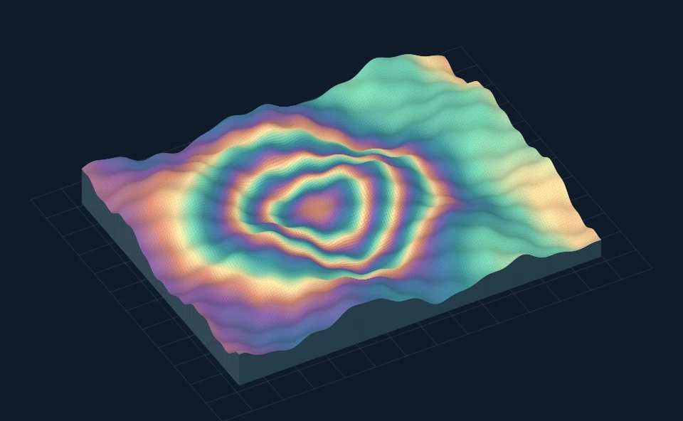
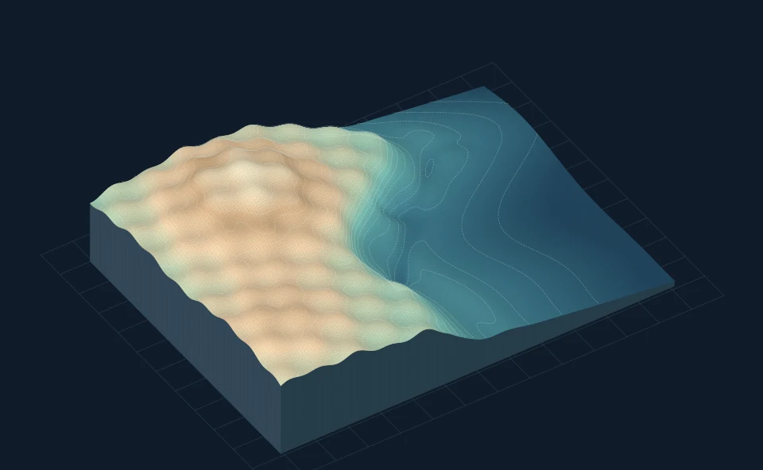
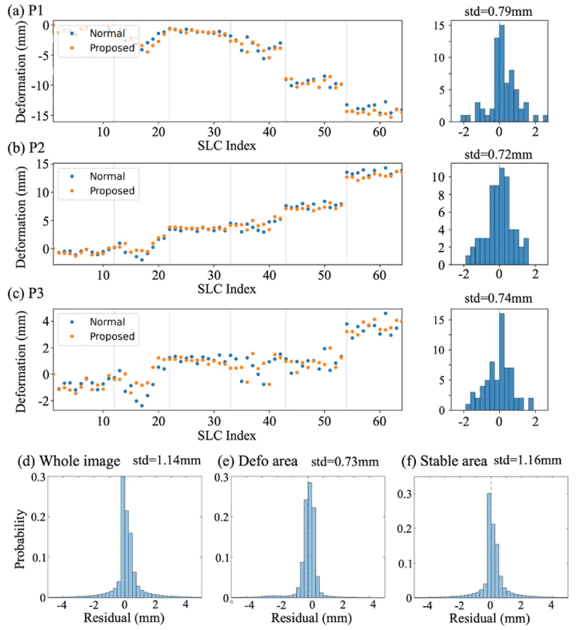

Research Assistant Professor · PolyU
Songbo Wu InSAR research
I use radar observations to measure ground movement and study geohazards, infrastructure and coastal change.
Department of Land Surveying and Geospatial Science
The Hong Kong Polytechnic University

Selected research
Explore research
InSAR methods
Estimating surface deformation from satellite radar, with attention to measurement uncertainty.
Radar monitoring for infrastructure
Measuring deformation in buildings, bridges and rail infrastructure.

Radar mapping of coasts
Measuring settlement at Hong Kong International Airport and across reclaimed land.
Cover images show simulated examples.
Recent publications
See all publicationsHotSAM: A Hotspot-Spatial-Adaptive Multi-Resolution Framework for Efficient Long-Term Deformation Monitoring in Terrestrial Radar Interferometry
Liu, Y., Zhang, Z., Wu, S.*, and Ding X. · ISPRS Journal of Photogrammetry and Remote Sensing, vol. 242, pp. 898-913.
A Novel Two-Stage Adversarial Joint Learning Model for Reconstructing InSAR Phase in Decorrelated Areas
Abdallah, M., Wu, S.*, and Ding, X. · Science of Remote Sensing, 13, 100373.
* indicates work completed under my supervision.

Research projects
See all projectsSatellite monitoring of ground stability for Hong Kong MTR
Sequential phase unwrapping and parameter estimation for long InSAR time series